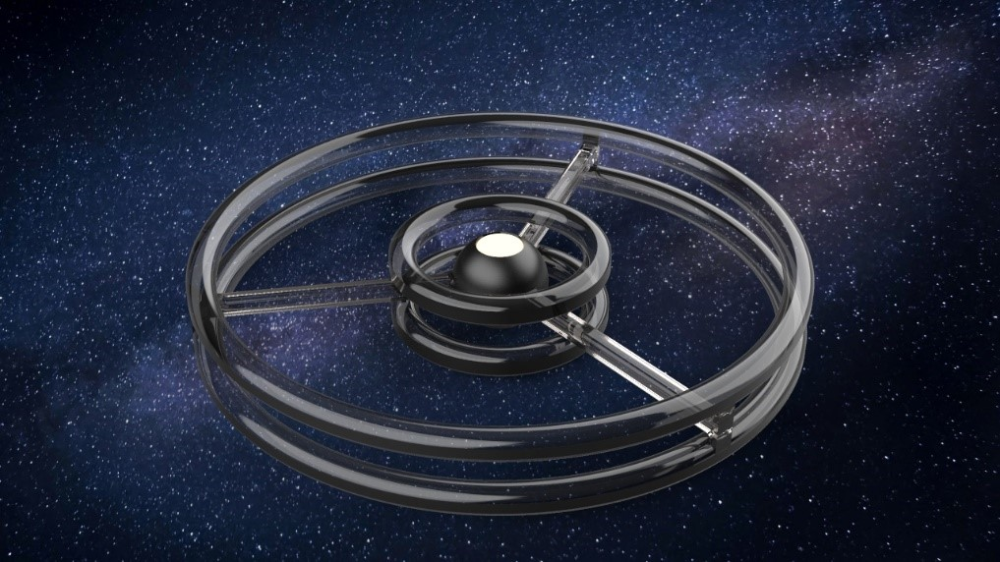

This network of space-focused structures will lead to exponential growth in investment in the sector in the coming years, leading it to become a business worth more than USD 1 trillion.

The areas of greatest interest will be Second order impacts, Ground equipment and Consumer Broadband.
The biggest investments will come from private agencies.

This will result in a drastic reduction in the cost of launching the modules into orbit.

It has been estimated that in the coming years the cost of bringing a kg into space will be only 100 dollars, finally allowing to be able to build a new city orbiting even cheaper. That's why we propose our idea of an orbiting hub where there can be a colony of 10,000 inhabitants in constant contact with universities and research centers around the world.

That's why we propose our idea of an orbiting hub where there can be a colony of 10,000 inhabitants in constant contact with universities and research centers around the world.
The structure, whose name will be "orchid", consists of a sphere with function of hub for spacecrafts and four toroid rings that rotating manage to produce artificial gravity.

Orchid, however, will not only be a great research centre, but there will also be room for ordinary citizens, as our idea is that of a self-sufficient society from an economic and food point of view. The value of many asteroids are measured in the quintillions of dollars, which makes the market for Earth’s annual production of raw metals – about $660 billion per year – look paltry in comparison Asteroid mining companies such as Planetary Resources and Deep Space Industries are the first-movers in the sector, and they’ve already started to identify prospective targets to boldly mine where no man has mined before. So far, roughly 15,000 such objects have been discovered, and their orbits all come in close proximity to Earth.

These materials can also be used for the construction of the structure itself through the use of 3D printers, in this way it would greatly reduce the costs of plant and management of the materials that can thus be assembled at 0 gravity reducing the environmental impact of a project. Which would otherwise be destructive to the earth's ecosystem. It is in this perspective that the proximity of satellites such as the Moon could be an excellent reservoir of regolith used, through the Selective Laser Melting System, as a material for future structures.

Our idea, however, is not to build a huge laboratory, like ISS, but to create a structure that allows humanity to colonize space. For this reason, large areas for crops and socialisation are needed. As for crops, imagine that much of the outer toroid will be dedicated to the green economy so that citizens can produce what they need to live, so that they can become an Earth-independent colony in the long term.
This goes hand in hand with the need for a spatial jurisdiction because it will also deal with civilians and not just experienced military personnel. It will therefore be necessary to involve the main international institutions as well as a team of lawyers and sociologists to follow the path of integrations of such diverse communities in such restricted environments.
Given the long period to spend on the facility, citizens will need to be shielded from cosmic radiation that could lead to cancer in the long run; one solution to this problem could be to create a magnetic field similar to that of Earth of about 0.52T(Tesla) through the use of magnesium diboruro superconductors (MgB2) which are cooled to temperatures close to 0K allow to shield the structure from the outside.
The project will also be an important resource to connect the world of universities with the space sector. On board the station, the most deserving projects proposed by students from all over the world will be selected each year to be realized in the district that includes the workshops.